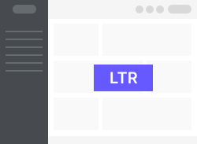
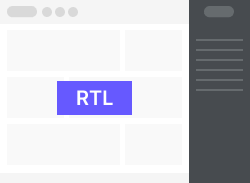
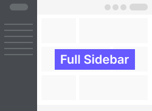
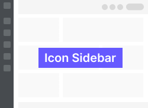

Reset Password
See your growth and get consulting support!
Reset
Or Sign in with
Linkedin
Twitter
Instagram
Customizer
Template Mode
Choose template mode dark & light
Layout Type
Choose layout Ltr & Rtl


Sidebar Type
Choose Sidebar icon & full


Monochrome Mode
Reset
Buy Now